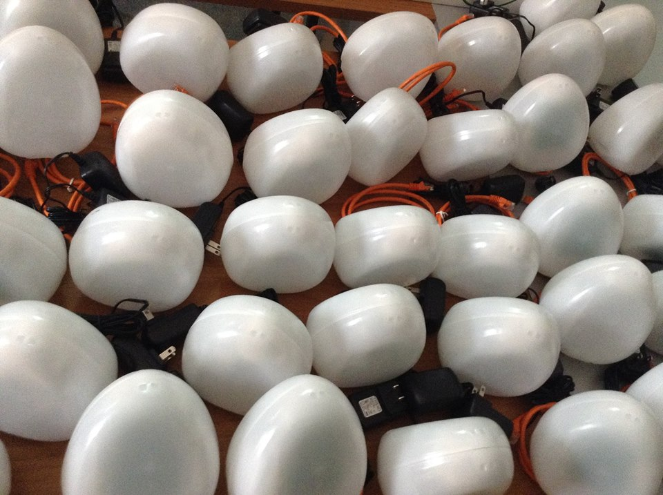

 საქართველოში ჰაერის დაბინძურება ერთ-ერთი უმნიშვნელოვანესი პრობლემაა, იგი საფრთხეს უქმნის ჩვენს ჯანმრთელობას. გაერთიანებული ერების გარემოს პროგრამაში აღნიშნულია, რომ ჰაერის დაბინძურება საქართველოს მოქალაქეების სიცოცხლეს 12 თვეზე მეტი დროით ამცირებს. აღნიშნული პრობლემის მოგავრების მიზნით, სამმა ორგანიზაციამ - ფონდმა „პარტნიორობა საგზაო უსაფრთხოებისთვის“, „ელვა“, „ეკო ვიჟენმა“ დაიწყო ინოვაციური პროექტი „სუფთა ჰაერი საქართველოს ქალაქებში“. პროექტი მოსახლეობის ჩართულობითა და თანამედროვე ტექნოლოგიების გამოეყენებით ხელს უწყობს საქართველოს ქალაქებში ჰაერის ხარისხის მონიტორინგს. პროექტის ძირითადი მიზანია ჰაერის ხარისხის გაუმჯობესება და ჯანსაღი გარემოს შექმნა თანამედროვე ინტერნეტ ტექნოლოგიების გამოყენებით, ჰაერის კონტროლის, მოქალაქეების განათლებისა და ადვოკატირების გზით. პროექტი შედგება რამოდენიმე კომპონენტისგან, ესენია სკოლებში ეკო-კლუბების მოწყობა და ბავშვების ჩართვა ჰაერის დაბინძურების შესახებ ინფორმაციის მოძიების პროცესში, და ეგრედ წოდებული, „ჰაერის ხარისხის საზომი კვერცხების“ დამონტაჟება სხვადასხვა ქალაქებში, რომელიც ჩართული იქნება ინოვაციურ კომპიუტერულ სისტემაში და ავტომატურ რეჟიმში მოგვაწვდის ინფორმაციას, რომლის მიხედვითაც შეიქმნება საინფორმაციო ბაზა. საბოლოო ჯამში, მოხდება აღნიშნული ინფორმაციის დამუშავება და შესაბამის ორგანოებში გაგზავნა.
Urban air pollution is one of Georgia’s most pressing public health issues. As demonstrated by the United Nations Environmental Programme, it shortens the life of urban citizens in Georgia with more than 12months. In order to solve the problem, three organizations – Foundation “Partnership for Road Safety”, “Elva”, “Eco Vision” started the innovative project “Air Quality Eggs”. The project promotes healthier, cleaner air throughout Georgia’s cities through implementing a powerful community-led advocacy and monitoring campaign. The main goal of the project is to improve air quality and create the health environment by the use of modern technologies, air monitoring, educating Georgian citizens about air quality and advocacy campaign. The project includes several components, such as creating eco clubs at schools and involving schoolchildren in the process of data collection on air pollution, and installing so called “Air Quality Eggs” in the different cities of Georgia, which will be connected with the innovative computer system that received information and data in the automated regime. All these information will create the database of air pollution. Finally, the database will be analyzed and the final paper with conclusions and recommendations will be sent to the authorities.